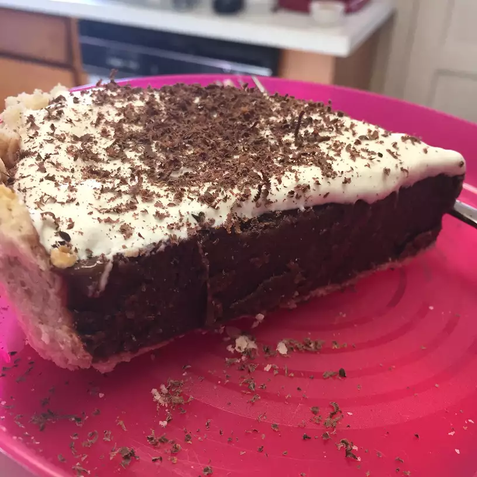

Chocolate Pie

Description
This is an easy recipe for a delicious, easy-to-make chocolate pie.
Ingredients
- 1 (9 inch) pie shell, baked
- 1 (5 ounce) package non-instant chocolate pudding mix
- 2 cups low-fat milk
- 1 (8 ounce) container fronzen whipped topping, thawed
- 1/4 cup chocolte shavings
Steps
- Prepare pudding according to package directions. Cover pudding with wax paper and allow to cool for 5 minutes.
- Pour pudding into pie shell and refrigerate until cool.
- Top with whipped topping before serving. Garnish with chocolate shavings.